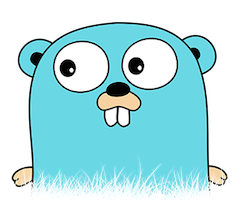

GO contribution layer for Spacemacs
Table of ContentsClose

1 Description
This layer adds extensive support for go.
1.1 Features:
- gofmt/goimports on file save
- Auto-completion using go-autocomplete (with the
auto-completionlayer) - Source analysis using go-oracle
2 Install
2.1 Pre-requisites
You will need gocode and godef:
go get -u -v github.com/nsf/gocode go get -u -v github.com/rogpeppe/godef go get -u -v golang.org/x/tools/cmd/oracle
Make sure that gocode executable is in your PATH. For information about
setting up $PATH, check out the corresponding section in the FAQ (SPC f e h
$PATH RET).
For best results, make sure that the auto-completion and syntax-checking
layers are enabled as well.
2.2 Layer
To use this contribution add it to your ~/.spacemacs
(setq-default dotspacemacs-configuration-layers '(go))
3 Configuration
3.1 Formatting
By default, go buffers are run through gofmt on save. To use a different
formatter, set the value of gofmt-command, e.g.
(setq gofmt-command "goimports")
or
(go :variables gofmt-command "goimports")
If you're using gocheck in your project you can use the
go-use-gocheck-for-testing variable to enable suite testing and to get single
function testing to work.
4 Working with Go
4.1 Go commands (start with m):
| Key Binding | Description |
|---|---|
SPC m h h |
godoc at point |
SPC m i g |
goto imports |
SPC m i a |
add import |
SPC m i r |
remove unused import |
SPC m e b |
go-play buffer |
SPC m e r |
go-play region |
SPC m e d |
download go-play snippet |
SPC m x x |
run "go run" for the current 'main' package |
SPC m g a |
jump to matching test file or back from test to code file |
SPC m g g |
go jump to definition |
SPC m r n |
go rename |
SPC m t p |
run "go test" for the current package |
SPC m t P |
run "go test" for the current package and all packages under it |
SPC m t t |
run "go test" for the function you're currently in (while you're in a _.test.go file) |
SPC m t s |
run "go test" for the suite you're currently in (requires gocheck) |
4.2 Go Oracle
| Key Binding | Description |
|---|---|
SPC m r o |
go-oracle set analysis scope |
SPC m r < |
go-oracle show possible callers |
SPC m r > |
go-oracle show call targets |
SPC m r c |
go-oracle show channel sends/receives |
SPC m r d |
go-oracle show definition |
SPC m r f |
go-oracle show free variables |
SPC m r g |
go-oracle show callgraph |
SPC m r i |
go-oracle show implements relation |
SPC m r p |
go-oracle show what the select expression points to |
SPC m r r |
go-oracle show all references to object |
SPC m r s |
go-oracle show callstack |
SPC m r t |
go-oracle describe selected syntax, kind, type and methods |